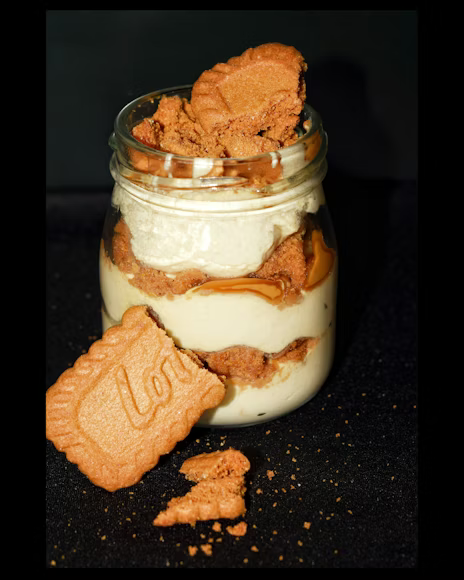

Go to homepage
Biscoff Cheesecake Recipe

Description
Biscoff cheesecake is a creamy dessert that features a buttery crust made from crushed Biscoff cookies, filled with a rich cheesecake batter that incorporates Biscoff spread for added flavor. It is often topped with melted Biscoff spread and cookie crumbles, creating a deliciously indulgent treat.
Ingredients
- 1 ½ (4 ounce) packages speculoos cookies (such as Lotus Biscoff®)
- 4 tablespoons coconut oil, melted
- 1 teaspoon salt
- 2 (8 ounce) packages cream cheese, softened
- 1 (16 ounce) container sour cream
- 1 cup white sugar
- 2 tablespoons amaretto liqueur
- 1 teaspoon almond extract
- 1 teaspoon vanilla extract
- 3 eggs
Steps
- Preheat the oven to 325 degrees F (165 degrees C).
- Crush cookies and mix in coconut oil and salt. Press over the bottom of a 9-inch pan to make a crust.
- Bake in the preheated oven until firm, about 10 minutes. Let cool.
- Beat cream cheese, sour cream, sugar, amaretto liqueur, almond extract, and vanilla extract with an electric mixer until blended. Add eggs one at a time, mixing on low speed just until each one is blended in. Pour over crust.
- Place cheesecake inside a larger baking pan. Add enough hot water to come halfway up the cheesecake.
- Bake cheesecake in the water bath until surface appears mostly set, about 1 hour 5 minutes. Turn oven off but keep cheesecake inside for 30 minutes. Run a knife around the rim of the pan to loosen the cheesecake. Let cool completely. Refrigerate until thoroughly chilled, about 4 hours.